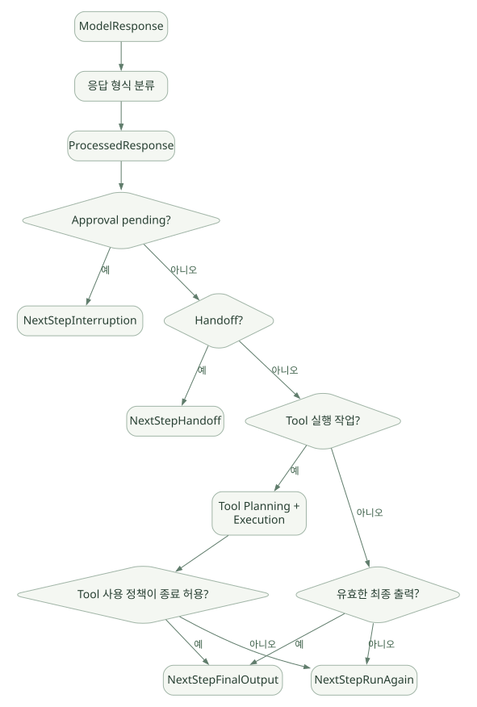

구현과 운영 / 단원 08
응답이 실행 상태가 되는 경로
ModelResponse → ProcessedResponse → 실행·위임·중단·종료
먼저 연결해 보기
실제 소스를 읽을 때는 Runner의 진입점에서 출발해 응답 분류와 다음 단계 자료형을 연결하세요. 모델 입력용 기록, 공개 Run Item, 영속 Session 이력은 목적이 다르므로 같은 내용이라고 전제하면 안 됩니다.
도구 생성과 실행도 별도 단계입니다. 시그니처의 스키마 변환에서 시작해 승인·재개·중복 호출 계획과 실제 함수 실행으로 이동하세요. 내부 클래스와 의사코드를 안정된 공개 API로 오해하지 않도록 원문의 태그 고정 링크를 대조해야 합니다.
읽는 관점재개 시 무엇을 다시 실행하는지, 차단된 출력과 기록의 보존 범위가 어떻게 다른지 추적하세요.
19. 소스 분석 ① — Runner 진입과 최상위 Loop#
19.1 중요한 소스 파일#
src/agents/run.py:Runner,AgentRunner,_run_impl, 실행 설정·Session 준비 및 결과 처리의 중심 [C09].src/agents/run_internal/run_loop.py: 모델 호출 및 스트리밍·Turn 관련 실행을 구성하는 내부 모듈 [C10].src/agents/run_internal/run_steps.py: 다음 단계 자료형, Tool 실행 결과 집계 구조 [C02].
19.2 진입점의 실제 정의#
src/agents/run.py에는 다음과 같은 공개/내부 계층이 존재한다. [C09]
# [소스 구조 발췌 - 이해용 축약]
class Runner:
@classmethod
async def run(cls, starting_agent, input, *, context=None,
max_turns=..., hooks=None, run_config=None,
session=None, ...): ...
class AgentRunner:
async def run(self, starting_agent, input, **kwargs): ...
async def _run_impl(self, starting_agent, input, **kwargs): ...Runner.run은 사용자에게 제공되는 API이고, AgentRunner는 문서상 experimental / public API가 아니라고 경고되는 내부 실행 클래스다. SDK 확장 시 AgentRunner를 임의로 subclass하여 핵심 루프를 교체하기보다 공개 확장 지점을 먼저 이용해야 한다. [C09]
19.3 AgentRunner._run_impl에서 추적할 상태#
- 시작 Agent 또는
RunState로부터 현재 Agent를 준비한다. - 실행 설정(
RunConfig), Context, Session 및 기존 대화 상태를 확인한다. - 로컬 Session/서버 관리 대화의 이력을 모델 입력 형태로 준비한다.
- 최초 입력 Guardrail, Tracing, Hook 등을 실행/등록한다.
- 현재 Agent와 컨텍스트에 적합한 모델을 호출한다.
- 모델 응답을 분류하고 도구 실행·위임·중단·종료를 선택한다.
- 매 Step의 입력·출력·검증 결과를 사용량·세션·결과 항목 등에 반영한다.
FinalOutput이면 결과를 반환하고,RunAgain·Handoff면 다음 Step으로 이어간다.
src/agents/run.py의 Session 준비 코드에는 서버 관리 대화 여부에 따라 이력을 직접 준비하는 동작이 분기한다. 일반 Session과 서버 관리 Conversation ID를 동시에 쓸 때 기록을 중복해서 모델에 전달하지 않도록 하는 이유를 이해하는 데 중요하다. [C09]
19.4 실행 시점에 생기는 세 가지 기록#
동일한 메시지라도 상태 관리 목적별로 표현이 달라질 수 있다.
- 모델 입력용 기록: 다음 모델 호출에 보낼 수 있는 형태. 필터와 전송 제약이 적용될 수 있다.
- 공개 Run Item: 애플리케이션이 어떤 일이 발생했는지 볼 수 있는 실행 항목.
- 영속 Session 이력: 다음 사용자 Turn에서 사용할 기록. Tool 결과와 Guardrail에 의한 출력 거부 등을 고려해 저장한다.
세 가지가 같을 것이라 가정하면 Handoff 필터, 출력 Guardrail, 중단·재개에서 버그가 생기기 쉽다. 공개 저장소의 개발 참고 문서에도 provider output → ModelResponse → RunItem/ProcessedResponse → Session/Replay/RunState의 흐름과 별도 뷰를 유지해야 한다고 설명한다. [C11]
20. 소스 분석 ② — 모델 응답 분류와 '다음 상태' 선택#
20.1 ProcessedResponse가 필요한 이유#
LLM 응답은 단순한 문자열이 아니다. 응답 항목에는 메시지, 함수 호출, Handoff, Shell/Computer 작업, MCP 승인 요청, 호스팅 도구 결과 등 다양한 형식이 있을 수 있다. SDK는 이를 모델 제공자 응답 형식 그대로 실행하는 대신, 실행할 항목을 분류한 내부 레코드로 만든다.
v0.24.0의 run_internal/run_steps.py에 존재하는 ProcessedResponse는 예를 들어 다음을 구분한다. [C02]
# [소스 구조 발췌 - 일부 필드 생략]
@dataclass
class ProcessedResponse:
new_items: list[RunItem]
handoffs: list[ToolRunHandoff]
functions: list[ToolRunFunction]
computer_actions: list[ToolRunComputerAction]
# shell, apply_patch, mcp_approval_requests, interruptions 등이 구분을 통해 모델이 결과를 이미 만든 Hosted Tool과 우리 Python 런타임이 직접 실행해야 하는 Function Tool의 처리 경로를 달리할 수 있다.
20.2 네 가지 다음 단계 자료형#
실제 run_steps.py에는 다음 자료형이 존재한다. [C02]
# [소스 구조 발췌]
@dataclass
class NextStepHandoff:
new_agent: Agent[Any]
@dataclass
class NextStepFinalOutput:
output: Any
@dataclass
class NextStepRunAgain:
pass
@dataclass
class NextStepInterruption:
interruptions: list[ToolApprovalItem]
# 재개와 서버 응답 처리 관련 상태 필드 추가핵심 통찰: 실행 상태를 단순히 done=True/False 두 값으로 처리하는 것이 아니라, 제어권 이전과 승인 대기를 별도 상태로 표현한다. 실제로 Runner를 수정하지 않고도 업무 로직에서는 이 네 상태를 중심으로 실행을 이해할 수 있다.
20.3 응답 분류의 핵심 소스#
src/agents/run_internal/turn_resolution.py에서 모델 응답 관련 항목을 실행 가능한 기록으로 바꾸고, execute_tools_and_side_effects(...) 같은 로직이 다음 단계 선택에 관여한다. [C03]
중요한 해석 포인트는 다음과 같다.
- 모델이 하나 이상의 Tool Call을 제출할 수 있다.
- 정의되지 않은 도구 이름은 정책에 따라 오류가 되거나 모델이 이해할 수 있는 오류 결과로 취급될 수 있다.
- 승인이 필요한 Call은 즉시 실행하지 않고 중단될 수 있다.
- Handoff가 있으면 다음 Agent로 제어권을 넘긴다.
- 일부 Tool 정책은 도구 호출 결과를 반환한 후 재호출 대신 최종 출력으로 처리할 수 있다.
- 위 경우에 해당하지 않고 모델이 유효한 최종 출력을 만들면 종료할 수 있다.
이 분기 전체를 'Tool 호출만 있으면 무조건 한 번 더 LLM 호출한다'로 단순화하면 오해가 생긴다. SDK에는 Tool 사용 정책, 중단·승인, 호스팅 실행, 출력형 요구조건이 함께 작동하기 때문이다.
20.4 주요 흐름의 추상화#
넓은 도식은 가로로 이동하며 읽을 수 있습니다. 도식 크게 보기 ↗

원문에 수록된 학습용 도식입니다. 노드·화살표·분기 라벨을 보존해 다시 배치했습니다. 세부 조건과 예시·구현의 구분은 앞뒤 본문을 함께 읽으세요.
도식 원문 보기 (Mermaid)
flowchart TD
M[ModelResponse] --> C[응답 형식 분류]
C --> P[ProcessedResponse]
P --> A{Approval pending?}
A -->|예| I[NextStepInterruption]
A -->|아니오| H{Handoff?}
H -->|예| N[NextStepHandoff]
H -->|아니오| T{Tool 실행 작업?}
T -->|예| X[Tool Planning + Execution]
X --> B{Tool 사용 정책이 종료 허용?}
B -->|예| F[NextStepFinalOutput]
B -->|아니오| R[NextStepRunAgain]
T -->|아니오| Y{유효한 최종 출력?}
Y -->|예| F
Y -->|아니오| R[의사도식] 실제 분기 우선순위, 병렬 실행, 에러·Guardrail·Handoff와 도구 호출의 혼합 응답 등 일부 세부 구현을 추상화했다.
20.5 Model Response → Run Item → Session을 구별해야 하는 이유#
Tool 결과는 모델에게 다시 넣는 응답 내용이면서, 사용자에게 보여줄 관측 정보이자 나중에 복원할 Session 기록의 일부일 수 있다. 하지만 보안상 차단된 출력이나 일부 SDK 내부 메타데이터는 그대로 Session에 저장되거나 모델에 재주입되어서는 안 될 수 있다. [C11]
실제 공부 과제: 하나의 가상 Tool Call이 ModelResponse.output에서 출발하여 ProcessedResponse.functions, Tool 실행 결과, RunResult.new_items, Session 저장까지 이동하는 경로를 화살표로 그려보자.
21. 소스 분석 ③ — Tool 생성부터 실행까지#
21.1 정의 단계와 실행 단계를 나눈다#
| 단계 | 대표 소스 | 실제 관심사 |
|---|---|---|
| 함수 introspection | function_schema.py |
시그니처·타입·설명 수집 |
| Tool 구성 | tool.py 및 decorators |
FunctionTool 객체 생성·옵션 |
| Tool 노출 | agent.py 등 |
현재 Context에서 허용된 도구 수집 |
| 응답 분류 | turn_resolution.py |
모델이 요청한 Tool 이름·인자 매핑 |
| 실행 계획 | tool_planning.py |
승인·중복·재개 상태 고려 |
| 실제 호출 | tool_execution.py |
Guardrail·실행·timeout·예외·결과 처리 |
| 반복/상태 | run.py, run_loop.py |
결과를 이후 모델 요청과 Session에 연결 |
21.2 Pydantic 검증 경로#
function_schema.py에는 function_schema(...)가 구현되어 있다. 데코레이터가 Python 함수의 시그니처·타입 힌트를 기반으로 모델에 설명할 JSON Schema를 준비하는 데 관련된다. [C05]
예를 들어 다음 함수는:
@function_tool
def fetch_experiment(experiment_id: str, max_rows: int = 100) -> str:
"""승인된 실험 데이터의 요약을 조회한다."""
return "..."모델에 보일 도구의 입력 계약이 자동 생성된다. 다만 아래는 별도다.
- 타입 검증:
max_rows가 정수인가? - 범위 검증:
max_rows <= 1000이어야 하는가? - 권한 검증: 사용자가 해당
experiment_id를 볼 수 있는가? - 데이터 검증: 반환된 실험 데이터가 올바른 기간/장비의 것인가?
스키마만 자동 생성했다고 나머지가 자동 검증되는 것이 아니다.
21.3 실행 계획과 Tool 중복 방지#
v0.24.0에는 run_internal/tool_planning.py와 tool_execution.py가 존재한다. 특히 승인 대기 후 재개된 작업에서는 이전에 이미 완료한 호출을 다시 실행하면 안 된다. 도구 호출 식별자, 승인 상태, 재개 시점의 남은 작업을 분리해 계획하고 실행하는 구조를 확인할 필요가 있다. [C06], [C07]
반도체 시사점: 읽기 전용 SELECT는 일반적으로 재실행 위험이 낮지만, MES 작업 요청·재분석 Job 제출·보고서 발송처럼 부작용이 있는 도구는 반드시 요청 ID·멱등성 및 외부 상태 대조가 필요하다.
21.4 Tool에서 최소 권한을 보장하는 패턴#
# [설계용 의사코드: SDK 내부 함수가 아님]
async def run_authorized_query(ctx, request):
principal = verify_server_identity(ctx.user_id)
assert principal.can_read(request.fab_id)
query = choose_allowlisted_query(request.metric_name)
return await readonly_db.execute(
query, bind={"fab": request.fab_id, "lot": request.lot_id},
timeout_seconds=10, row_limit=500,
)어떤 내용을 조회할지 모델이 정하더라도 실제 쿼리문을 임의로 실행하도록 허용하지 않고, 허용된 스키마와 정해진 분석 작업으로 제한하면 공격 표면을 줄일 수 있다.
22. 소스 분석 ④ — Handoff, Session, 승인 상태의 경계#
22.1 Handoff는 모델에 하나의 특별한 Tool처럼 나타날 수 있다#
Handoff는 모델이 다른 Agent에 위임할 수 있도록 구성한 도구와 유사한 호출 형태로 노출되며, SDK는 이를 일반 FunctionTool과 구별하여 대상 Agent를 변경한다. Handoff 이후 어떤 이력을 전달하는지와 이전 Agent의 검증 정책이 어떻게 적용되는지를 확인해야 한다. [S05], [C03]
22.2 기록을 어떤 목적으로 남기는가?#
Session은 멀티턴 대화의 지속성을 다루지만, RunState는 중단한 순간의 실행 복원을 목표로 한다. v0.24.0의 run_state.py에서 RunState는 context·usage·interruptions를 포함한 직렬화 가능한 실행 스냅샷으로 문서화된다. [C08]
# [개념 예시] 현재 호출 중단/승인 후 다시 실행
result = await Runner.run(agent, "승인 필요한 업무 실행")
if result.interruptions:
state = result.to_state()
# server-side authorization / approval / persistence
for pending in result.interruptions:
state.reject(pending)
result = await Runner.run(agent, state)22.3 취약할 수 있는 복원 과정#
- 사용자의 브라우저가 직접
RunState를 수정하여 제출하면 승인된 작업 인자도 바뀔 수 있다. - 동일 State를 여러 인스턴스가 동시에 Resume하면 중복 실행 위험이 있다.
- Session 이력이 외부에서 수정되어 있으면 원래 상태와 복원 상태가 불일치할 수 있다.
- 이미 Tool이 실행된 뒤 결과 기록만 실패하면 자동 재실행은 부작용을 낳을 수 있다.
해결 기본 방향: 서버 소유의 신뢰된 스냅샷, 인증된 승인자, 각 호출의 ID·상태 전이, 재개 락, 외부 작업 멱등성과 대조 로직. [S13], [S19]
22.4 실제 코드를 따라 읽는 권장 순서#
agent.py:Agent구성 필드,get_all_tools()계열 경로 및 Tool 가시성.run.py:Runner.run()→AgentRunner.run()→_run_impl().run_internal/run_loop.py: 모델 호출·스트리밍·Turn 준비.run_internal/turn_resolution.py: 모델 출력 분류와 Tool/Handoff/Final 처리.run_internal/run_steps.py:ProcessedResponse,NextStep...,SingleStepResult.tool.py·function_schema.py: 함수 도구 생성과 매개변수 스키마.tool_planning.py·tool_execution.py: 승인·중복 작업·실행 예외.run_state.py·run_internal/session_persistence.py: 일시 중단·복원·저장 이력.items.py·result.py·stream_events.py: 외부 노출 결과와 재생 가능한 항목.tracing/: 계측 이벤트 생성과 내보내기.